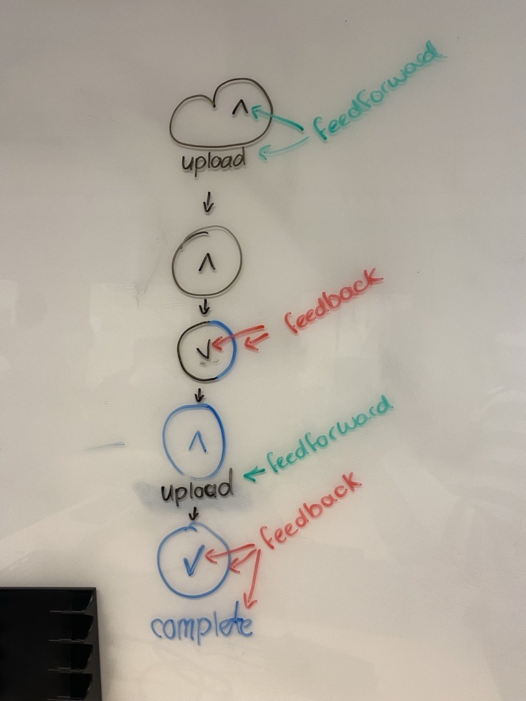
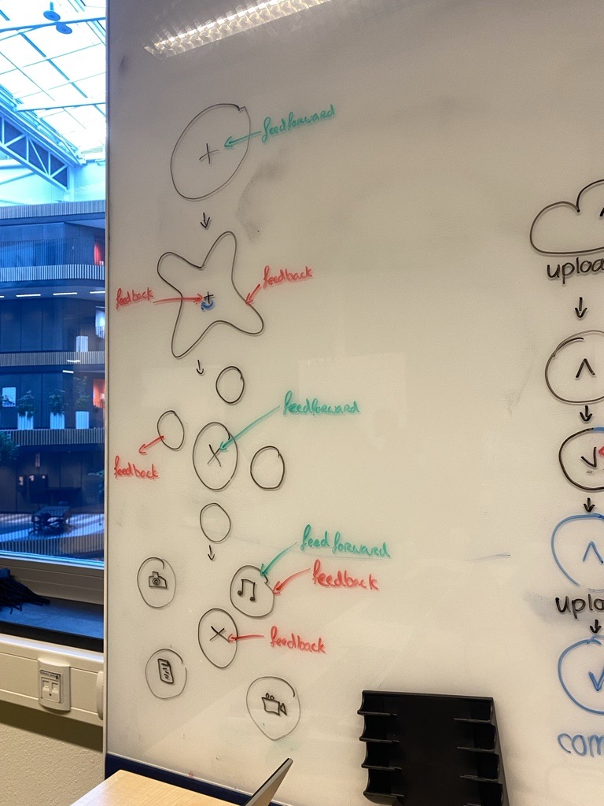
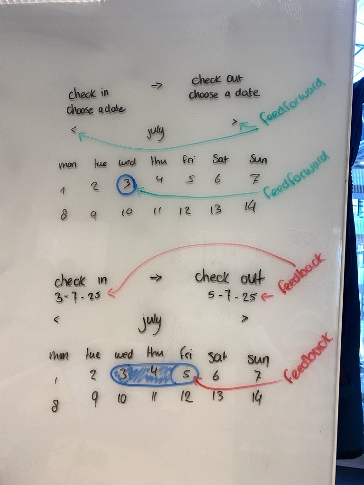
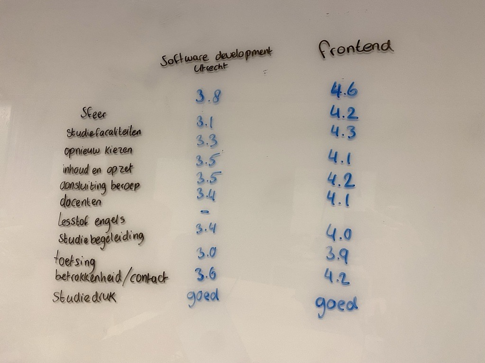
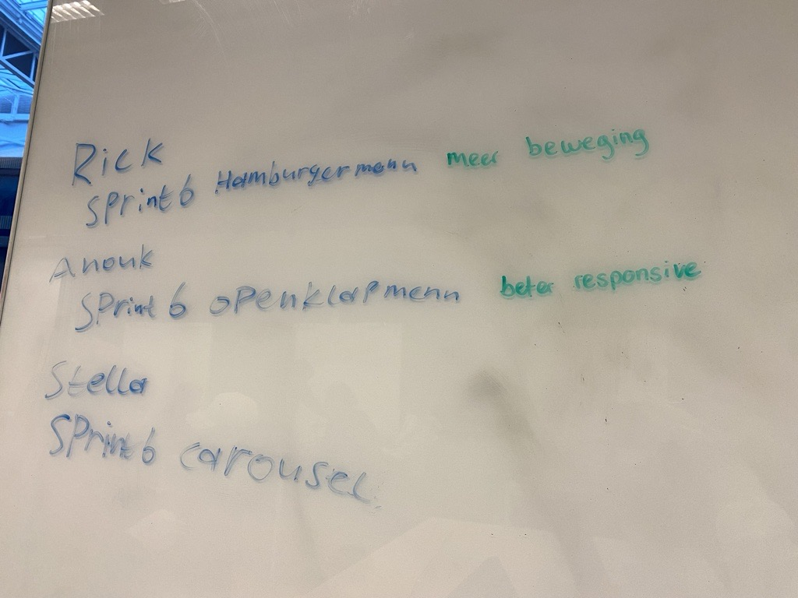
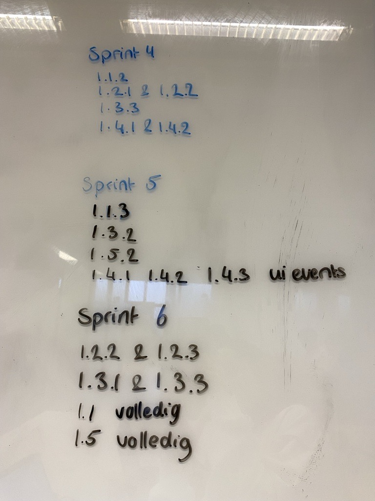

Daily checkout, maandag 6-1-25
Goede voornemens:
- Mezelf meer verdiepen in het vak gebied door zelf ook mensen te gaan volgen op instagram of youtube.
- Meer nieuwe technieken uitproberen
Wat kan ik doen om langer bij FDND te mogen "werken"?
- Optijd blijven komen
- Inzet blijven tonen door op de dinsdagen te komen
Verbeter puntjes voor de End-term 1
- Meer testen van sprint 5
- Meer schetsen sprint 6
- Mobile first werken sprint 6
- Responsive werken (ook met annimatie) sprint 6
- Correct werken met en sluiten van issues sprint 6
- 1.5.1 mensen / blogs volgen van mensen uit het vak gebied, we love web verslagjes maken sprint 6
- 1.5.3 eigen inzichten en capiciteiten en beperkingen kunnen benoemen sprint 6
- I love web overzichtelijker maken, door inklapbare onderdelen te maken
Daily checkout, woensdag 8-1-25
Wat heb ik vandaag gedaan?
Ik heb meegedaan aan de workshop over het mobile first ontwerpen. Daarna heb ik de belangrijkste algemeene dingen
zoals: kleuren, fonts en fontsizes in een style sheet gezet. Zo kan ik deze makkelijk toepassen op een appart css bestand.
Daily checkout, maandag 13-1-25
Wat heb ik vandaag gedaan?
Ik heb mee gedaan met de workshop over interacties. En daarna ben ik aan de gang gegaan met mijn interactie ontwerpen.
Mijn user story is vrij duidelijk omdat dat de hele reden is dat mensen naar de website zoeken: "Als iemand die opzoek is naar een passend cadeautje,
wil ik kunnen chatten met AI zodat ik snel en gemakkelijk een passend cadeautje kan vinden voor een persoon." Op mijn hifi schets heb ik een wireflow gemaakt.
En vanuit daar ben ik vast begonnen met het bedenken hoe ik het duidelijkst een breakdownschets kan maken met alle lagen.
Whiteboard foto's



Daily checkout, vrijdag 17-1-25
User testing
Ik heb de user test gedaan.
Het was voor mij de eerste keer, omdat ik de vorige gemist had door ziekte. Ik heb waardevolle tips gekregen en ook gegeven aan
Sebastiaan, Rapha en Daan. Daarna ben ik naar de We Love Web lezig van Dave Bitter gegaan.
Daily checkout, maandag 20-1-25
Ik heb vandaag gewerkt om mijn code te refactoren .
Ik ben aan de slag gegaan met het nesten van items. Ik had hier nog niet echt eerder mee gewerkt, wel bij andere gezien. Ik heb dit ook gelijk in m'n I Love Web toegevoegd in de CSS.
Daily checkout, woensdag 22-1-25
Wrap up
Tijdens de wrap up heb ik de read me geschreven.
Ik heb erin gezet wat mijn ontwerpen zijn, belangrijke stukjes code en de breakpoints van de website.
Ook hebben we een vergelijking gemaakt tussen onze opleiding en de opleiding Software development in Uterecht. Via een website die uitslagen geeft aan de hand van resultaten
die uit een test onder de studenten zijn gedaan. We kwamen tot de conslusie dat wij gemiddeld op alles een punt hoger scoren. Ik heb dus duidelijk de goeie opleiding gekozen.

Daily checkout, vrijdag 24-1-25
Vandaag heb ik samen met Rick en Stella de retrospect van sprint 6 gedaan. We hebben gekeken wat voor bewijslast van de gedragsindicatoren we nog missen en welke we uberhaupt moeten hebben.
Hiervan hebben we een lijstje gemaakt en zijn we mee aan de slag gegaan. We hebben ook gekeken of we ergens dubbele bewijslast voor hebben en welke we dan het beste vinden om te laten zien
tijdens het End-term assessment van semester 1.

